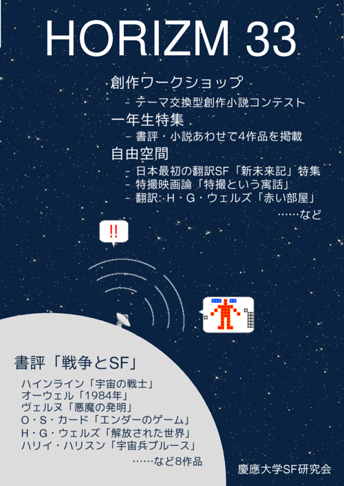

「HORIZM 33」は当研究会の会誌「HORIZM」の第33号です。
本誌の主たる企画は「企画書評」、「創作ワークショップ」、「一年生特集」、「自由空間」の3つとなっています。
書評の存在意義とは一体何でしょうか？
ここでは、この疑問に対して次のように答えたいと思います。すなわち、書評の意義とは、その小説の構造やその背景にある考え方を明確に示し、それに適切な論評を加えることによって、読者の作品理解をよりいっそう深めることにあるのだ、と。
もちろん、書評というものがこれに尽きるというつもりはありません。おもしろおかしい書評もあれば、ブックガイドとしての書評もあるでしょう。しかし、この種の解説が書評という分野の比較的大きな部分を形作っているいうことは否定できないことです。ストーリーの背後に隠れている作者の考えを明晰な言葉で語り、にわかには言い表し難い作品の基底にある精神をあざやかに表現するような書評はまさに名書評と呼ぶにふさわしいものでしょう。
今回の企画書評は、従来の書評がどうしてもあらすじ中心になりがちだったことを反省し、解説としての書評を目指すものであります。そのために、戦争という強力なテーマを少なからず扱ったSFから特にメッセージ性の強い11作品を選び出しました。次のような作品がこのリストに入っています。
この方針がどこまでメンバーに伝わったのか、また各々がどれほど与えられた作品を深く解釈することができたのか、非常に心許ない部分もありますが、とりあえずは一度読んでみていただきたい思います。これらの書評が、作品を考える上で、何か役に立つものになることを願っています。
なお、本サイトには、見本として以下の3つの書評が掲載されています。
創作ワークショップとは、一定の条件を課してメンバーに小説を執筆させるという企画です。今回は:
というルールで行いました。
参考までに、今年のテーマには例えば次のようなものがありました:
今年は一年生がたくさん入ってきたので、短い期間をあたえて何か書いてもらうことにしました。以下がその作品の一覧です。
このスペースの目的は、当研究会のメンバーが好き勝手作ったものに発表の場を与えることにあります。「面白そうなものなら何でも載せる」と豪語したところ、次のような原稿が集まりました:
top » publications » HORIZM33